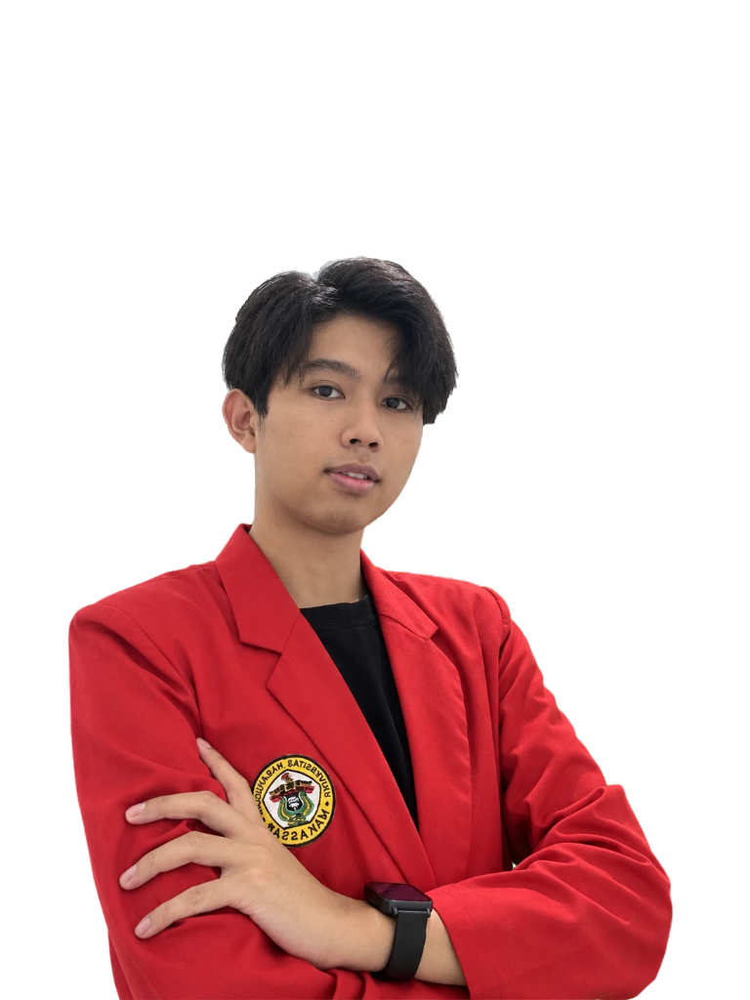
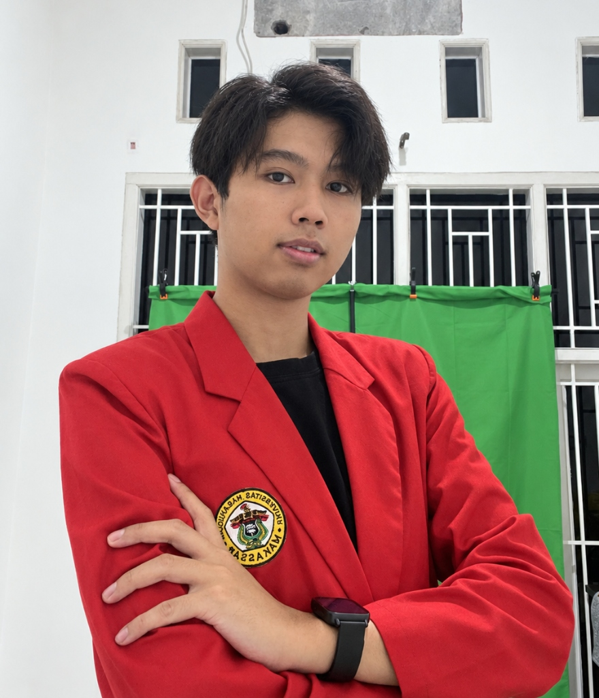
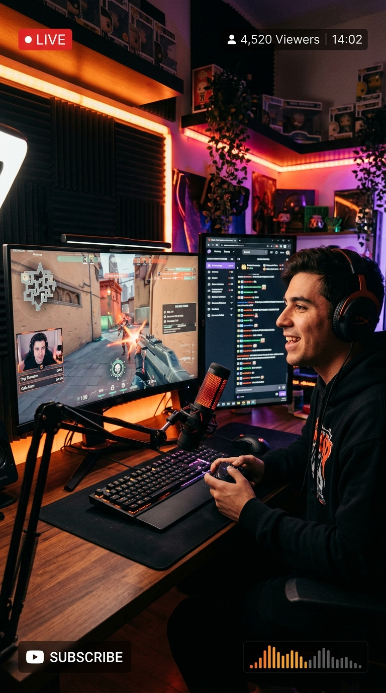
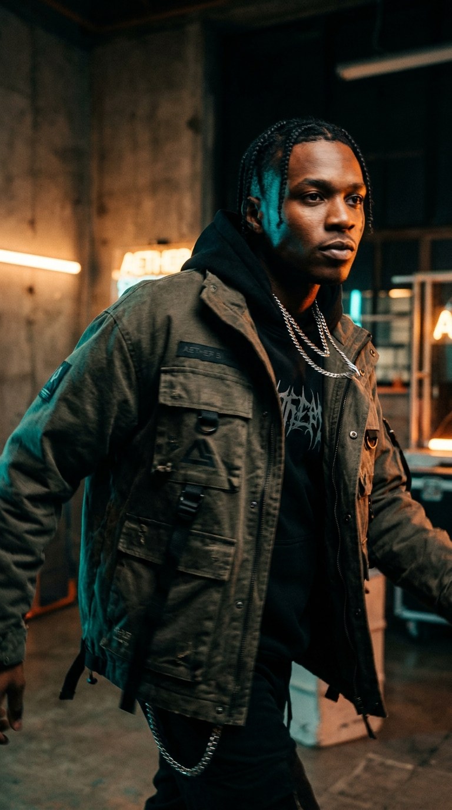
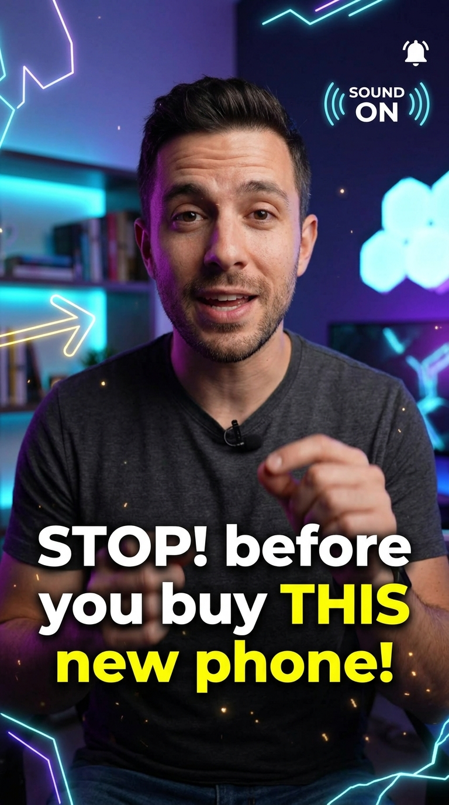
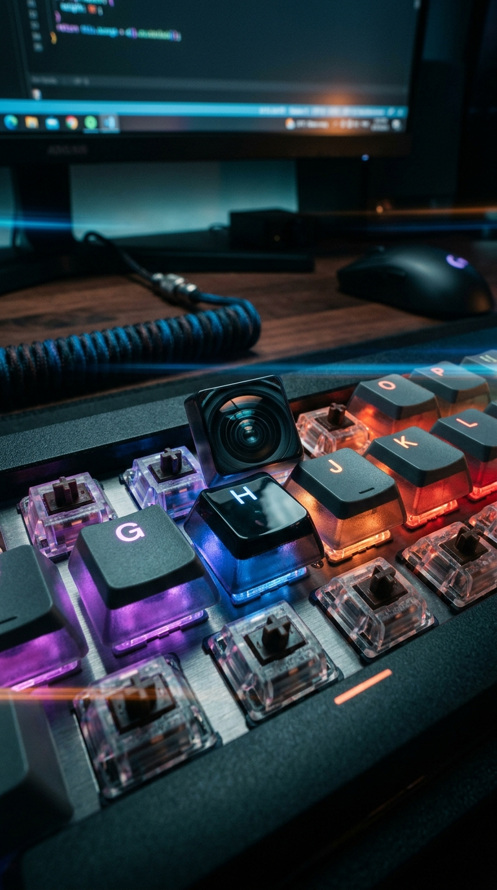

FARIZ IDHAM
RAMDHANI.
ReyRiz • Full-Stack Developer, AI Enthusiast & Video Editor
"Membangun arsitektur perangkat lunak cerdas dan konten visual kreatif yang menghubungkan inovasi teknologi dengan dampak nyata."

➜ Affiliation: Universitas Hasanuddin — Sistem Informasi
➜ Ketik 'help' atau klik pintasan di bawah untuk navigasi:
Keahlian & Sorotan Utama
Pondasi teknis dan latar belakang yang membentuk pendekatan rekayasa perangkat lunak saya.

Fariz Idham Ramdhani
ReyRiz • S1 Sistem Informasi
Mahasiswa FMIPA UNHAS yang aktif merancang aplikasi web modern berkinerja tinggi, algoritma analitik prediktif, serta pengujian sistem otomatis (STQA).
Core Tech Stack Favorit
Lihat Semua Matriks →Fokus Saat Ini
• Mengembangkan sistem web skala enterprise (WMS & E-Commerce)
• Eksplorasi Machine Learning & Time Series AI
• Otomasi Pengujian QA
Videography & High-Retention Short-Form
Portofolio penyuntingan video vertikal (9:16) berkecepatan tinggi dengan optimasi hook 3 detik pertama, kinetic typography, dan audio-visual storytelling untuk content creator serta kampanye komersial.




Filosofi Editing: Retensi 3 Detik Pertama & Sound-Driven Cut
Kombinasi antara audio design multi-layer (riser, whoosh, hit), color grading sinematik, dan sinkronisasi ritme beat memastikan setiap detik video memiliki daya tarik tinggi untuk algoritma YouTube Shorts, Instagram Reels, dan TikTok.
Karya & Proyek Pilihan
Beberapa inovasi perangkat lunak dan analitik prediktif yang telah saya rancang.
Rekam Jejak Profesional
Pengalaman nyata dari industri hingga laboratorium akademik universitas.
BRRADS Industries
Editor & IT Staff
Mendukung operasional IT harian dan produksi konten kreatif perusahaan.
Web Developer & Editor
Merancang & membangun Warehouse Management System (WMS) berbasis web untuk pencatatan stok opname dan manajemen inventori gudang real-time.
Reza Auditore (Content Creator / Streamer)
Lead Video Editor
Mentransformasikan rekaman livestream panjang menjadi klip dan reels dengan retensi tinggi untuk YouTube, TikTok, dan Instagram.
Tertarik untuk Berkolaborasi?
Saya selalu terbuka untuk peluang magang, proyek freelance, atau diskusi seputar rekayasa software dan AI. Mari wujudkan ide Anda bersama!